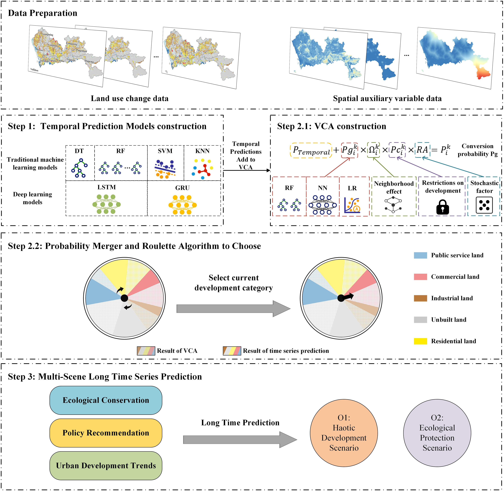
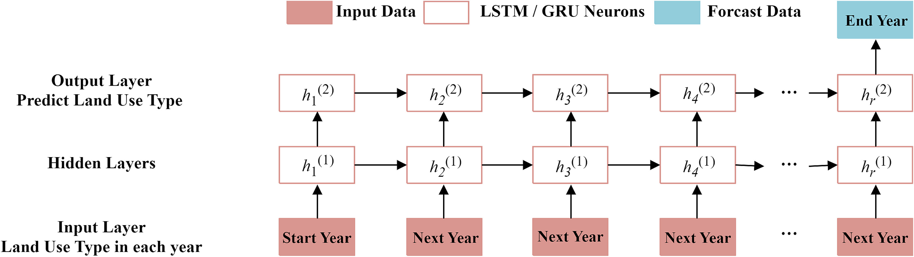
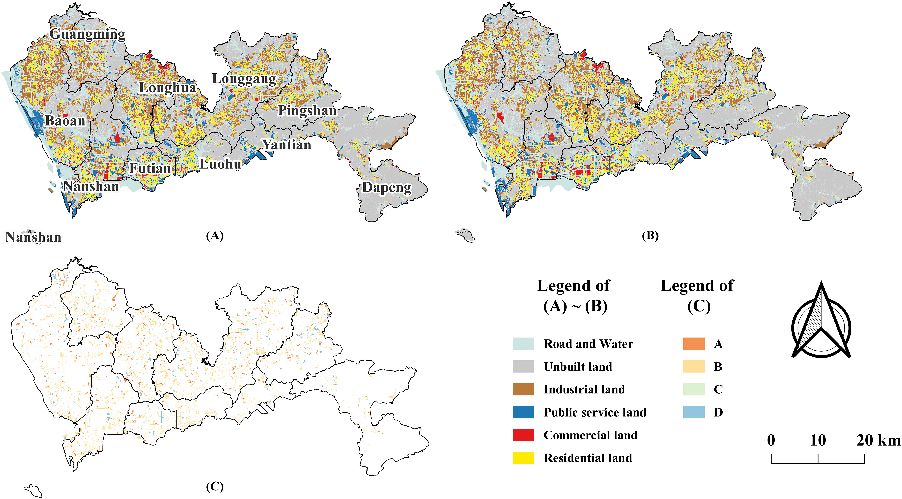
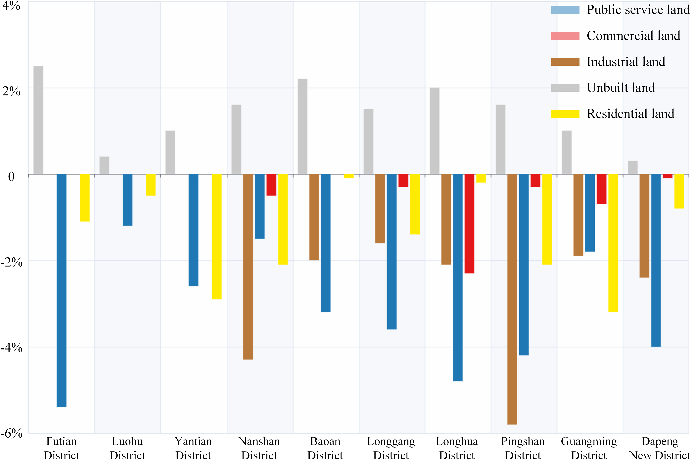

Teaser image — place at static/images/temporal-vca-teaser.png
'">
Abstract
Vector cellular automata (VCA) are effective models for cadastral-scale land use change modeling, leveraging
fine spatial granularity information from cadastral plot data. The temporal dimension has the potential to
improve the performance of VCA further. However, it is challenging to precisely capture long sequence information
of cadastral plot temporal data for VCA while ensuring accurate capture of fine granularity information
simultaneously. Our paper introduces the Temporal-VCA framework, which fully utilizes fine spatial and temporal
granularity information of cadastral plot temporal data to enhance the accuracy of VCA. Applying Shenzhen's
annual cadastral plot data from 2009 to 2014, this study shows how deep learning techniques can elucidate the
temporal aspects of VCA models. Temporal-VCA notably improves precision by up to 22.12%, outperforming the
regular VCA models and traditional raster CA models. It reveals the complex nonlinear temporal patterns within
cadastral-scale urban development processes. Designed simulations for 2030, including scenarios of
disordered development and ecological protection, highlight the benefits of fully leveraging fine
temporal granularity information of temporal data into urban planning, potentially reducing ecological damage
by 70%. Our findings offer a novel methodology for urban land use simulation, with significant implications for
urban planning and the advancement of sustainable cities.
Keywords: Vector cellular automataDeep learningTemporal dataLand use change simulation
1. Introduction
In recent years, global cities have experienced a rapid development stage and have had a significant impact on
the ecological environment. Urban land use change refers to the changes in spatial distribution and functional
structure of various types of land within and around a city that occur with urbanization. Simulation of urban
land use change can help optimize the structure and spatial layout of urban land use, and deepen the
understanding of the impact mechanism of urbanization on land use change.
Cellular Automata (CA), as a classic type of spatial dynamics model, has a "bottom-up" characteristic and can
retain more foundation and details in the dynamic system, gradually occupying a dominant position in urban land
change simulation. Traditional CA models are based on regularly shaped raster-format units, setting specific
transformation rules to change cell states and simulate the spatiotemporal dynamic changes of urban development.
Due to the spatial heterogeneity of land use characteristics, boundary conditions usually need to be considered
in simulations. In raster CA models, handling boundary conditions can be a challenge. The vector CA (VCA)
model is more accurate in simulating geographical features and land use boundaries at small cadastral scales.
Time could be a potential dimension to further improve the performance of VCA in simulating land use change.
The different potential temporal periodic patterns exist for different land use changes and affect the overall
dynamics of urban land use. However, the time dependence in VCA model still needs to be further explored. It
is more challenging for such fine-grained VCA models to precisely decouple the time dependence of
cadastral-scale land use time series while ensuring the accurate capture of fine spatial granularity
information simultaneously.
Research has confirmed that deep learning models can effectively mine time series information and achieve the
expected results. Thus, deep learning techniques provide an opportunity to enhance VCA's ability to capture
long sequence information, thus further improving the performance of VCA to simulate cadastral-scale land use
changes accurately. This paper proposes a Temporal-VCA framework for simulating urban land use change, which
couples long sequence of cadastral plot data and VCA. This framework takes Shenzhen, Guangdong Province, as
the study area, based on fine-spatially-grained and long-sequence cadastral land use time series data.
2. Literature Review
2.1 Vector cellular automata models for urban land use simulations
With the refinement of simulation methods, vector CA (VCA) models based on irregularly shaped vector-format
cells have been proposed and proven to be a more advanced model for urban change simulation. Urban land
renewal typically occurs on cadastral land parcels. However, traditional raster CA models based on
grid-shaped raster-format units often have inherent limitations, such as sensitivity to pixel size and fixed
unit shape with the inability to accurately express objective geographical entities. The VCA model based on
cadastral plot data can accurately represent the irregular shape of actual land use, leveraging the high
spatial granularity of cadastral-scale land use data.
In the research of VCA models, Zhuang et al. accurately mined CA conversion rules based on the random forest
algorithm and simulated urban land use changes at the cadastral data level. The HGAT-VCA model proposed by
Guan et al. effectively expresses spatial interactions and improves the accuracy of land use simulation by
combining VCA with graph convolutional neural networks. However, most of the existing studies focus on how to
improve the accuracy of VCA simulation, ignoring that time is another important dimension of urban land change.
2.2 Time dependence in land use
In the study of time dependence in land use change, some scholars have constructed a series of methodological
frameworks on how to organically integrate spatial region division or time series evolution of land cover for
traditional raster CA models. Zhou et al. proposed the KCL-CA model, which integrates K-Means, Convolutional
Neural Network (CNN), and LSTM to solve the temporal dependence and spatiotemporal heterogeneity in land use
change. Li et al. proposed using trend adjusted neighborhood as a weighting factor, integrated this factor
into commonly used Logistic CA models to achieve long-term urban expansion modeling with high accuracy.
However, the issue of time dependence in VCA still needs to be thoroughly investigated. Regular VCA models
lack the ability to exploit long-time series sequence information. Long sequence information can help reveal
the VCA simulation of land use change in different periods. Hence, utilizing fully the temporal dependence
characteristics of land change can contribute to a more accurate simulation of urban cadastral land use change
in VCA models.
2.3 Mining land use time series information based on deep learning methods
Deep learning models can learn long-term dependencies in time series, identify the interrelationships between
different time points, and thereby enhance the prediction accuracy of land use patterns. LSTM and GRU
models can effectively capture and learn long-term dependencies in time series data by introducing gating
mechanisms. Scholars have demonstrated the advantages of LSTM and GRU models in mining time series
information. Thus, deep learning models can extract high-level features and abstract information from data
through multi-level nonlinear transformations and can be fully applied in time series prediction tasks.
3. Study Area and Data
Shenzhen City, China, is taken as the study area. Shenzhen, an emerging and rapidly developing city with an
area of 1,997.47 km², governs 9 administrative regions and 1 new district. In the process of urbanization,
it emphasizes the efficient and intensive use of land resources. However, due to the rapid urbanization
process and economic development needs, there is a phenomenon of excessive development and utilization of
land resources in some areas. Research has shown that rapid urbanization in Shenzhen from 1979 to 2017 led to
a 3400% hike in land development, catalyzing prominent urban issues encompassing environmental and
infrastructural challenges.
This paper mainly uses two types of data: land use time series data and spatial auxiliary variables from
Shenzhen city. The land use time series data comes from the Shenzhen Planning and Natural Resources Bureau
cadastral plot data, including 6 cadastral-scale land use maps ranging from 2009 to 2014. Each year's data
is divided into six types: water and roads, unbuilt land, industrial land, public service land, commercial
land, and residential land. The study also utilizes Gaode's POI data, OpenStreetMap data, and night light
data to construct spatial auxiliary variables.
Fig. 1. Study area and land use distribution in (A) 2009 and (B) 2014. (C) Ecological conservation zone. (D) Comparison of the number of various land use plots from 2009 to 2014.Fig. 2. Spatial driving factors calculated for the urban land use change.
4. Methodology
Fig. 3 illustrates the construction and analysis process of the Temporal-VCA model. This framework consists
of three steps: (1) Time series model construction, which uses multiple machine learning models to mine
temporal factors and their probabilities in land use change; (2) Model fusion and urban land use simulation,
which combines the prediction probability of the time series model with the prediction probability calculated
by the VCA model; (3) Urban land use prediction under different scenarios, which designs two future scenarios
to simulate long-term land use development.

Fig. 3. Workflow of the proposed Temporal-VCA framework.
4.1 Construction of time series model
The proposed time series forecasting model employs conventional machine learning and deep learning models to
automatically derive features from time series data. This paper uses land use temporal data from 2009 to 2013
as training data and land use data from 2014 as accuracy verification data. The training set has a test set
data ratio of 7:3. To avoid imbalanced samples for the multi-class classification, this paper adopts the
method of adjusting the training weight parameters.
For time series prediction, this paper adopts a fixed width sliding window technique, which trains the model
with fixed-length historical data at each time step and predicts the last time point within the window.
4.1.1 ML-based overall probability calculation
This paper selects four machine learning models: Decision Tree (DT), Support Vector Machine (SVM),
Random Forest (RF), and K-Nearest Neighbor (KNN), and two deep learning models, including LSTM and
GRU, to explore the temporal factors and their probabilities in the process of land use transformation.
4.1.2 DL-based overall probability calculation
Existing research suggests that GRU and LSTM models can capture long-term temporal dependencies for land use
classification and prediction performance, effectively improving classification accuracy and establishing more
comprehensive land use conversion rules. LSTM and GRU use the Softmax function to calculate the probability
distribution of categories.

Fig. 4. Flowchart of LSTM and GRU Mining Land Use Conversion Probability.
4.2 Consolidation of land development probability and simulation of land use
Based on the land use conversion probability calculated by the above model, this study combines the conversion
probability of each plot calculated by the time series prediction model and the VCA model and obtains the
ultimate development probability of the plot:
Pki = Pgki × Ωki × Pcki × RA
Where Pki is the overall development probability of converting the i plot into a Class k plot,
Pgki is the development probability of each plot, Ωki is the neighborhood effect,
Pcki is the development limiting factor, and RA is a random value. Finally, the roulette wheel
algorithm is used to determine the final category of land use change.
4.3 Prediction of urban land use in different scenarios
To compare the land use patterns and trends under different development paths, this study designed two
development scenarios:
Scenario O1 (Disordered development): Following historical development trends, allowing for the
mutual transformation of various types of land.
Scenario O2 (Ecological protection): Prohibits all plots within the ecological conservation zone
from being developed into four types of urban land.
4.4 Model evaluation
To comprehensively evaluate the simulation performance of the proposed model, this paper applied several
evaluation indicators: Figure of Merit (FoM), Kappa coefficient, and Overall Accuracy (OA). If FoM is
more significant than 0.2, the land use simulation model has excellent simulation ability.
5. Results
5.1 Analysis of simulation results of land use change
Based on machine learning models, Temporal-VCA simulated the urban land use in Shenzhen in 2014. The
Temporal-VCA model improves the overall simulation accuracy by 19.027% to 22.124% compared to the discrete
data model PLUS. Among them, the overall simulation accuracy FoM of Shenzhen based on the KNN-VCA model
reached 0.276, and even the FoM simulation accuracy of Luohu District, Futian District, and Bao'an District
was above 0.290.

Fig. 5. Simulation result of the land-use dynamic. (A) Ground truth data in 2014. (B) The optimal simulation results of land use change in 2014 (KNN-VCA). (C) The correctly simulated and incorrectly simulated land parcels.
Table 1. The simulation accuracy (FoM) of different models based on Temporal-VCA.
District
DT
RF
KNN
SVM
LSTM
GRU
PLUS*
RF-VCA*
Futian
0.298
0.297
0.310↑
0.307
0.294
0.305
0.133
0.241
Luohu
0.302↑
0.306↑
0.309
0.309↑
0.309↑
0.306↑
0.252
0.261
Yantian
0.242
0.242
0.274
0.258
0.249
0.251
0.115
0.252
Nanshan
0.259
0.261
0.262
0.261
0.257
0.267
0.178
0.200
Baoan
0.295
0.294
0.298
0.298
0.298
0.293
0.258
0.215
Longgang
0.251
0.254
0.261
0.259
0.253
0.255
0.187
0.263
Longhua
0.268
0.272
0.280
0.278
0.273
0.277
0.328
0.263
Pingshan
0.238
0.238
0.241
0.242
0.242
0.243
0.269
0.246
Guangming
0.270
0.267
0.273
0.276
0.267
0.265
0.225
0.285
Dapeng
0.237↓
0.231↓
0.227↓
0.229↓
0.222↓
0.237↓
0.118
0.293
Table 2. Evaluation of simulation results indicators for each model.
Model
FoM
Kappa
OA
DT
0.269↓
0.979↓
0.984↓
RF
0.270
0.981
0.985
KNN
0.276↑
0.981
0.985
SVM
0.275
0.981
0.985
LSTM
0.271
0.982↑
0.986↑
GRU
0.273
0.980
0.985
PLUS*
0.226
0.783
0.863
RF-VCA*
0.250
0.809
0.899
5.2 Prediction results in different scenarios
Based on Temporal-VCA and different future development scenarios, this paper conducted a long-term prediction
of land use change in Shenzhen in 2030 and quantitatively studied the temporal characteristics of land use.
The results suggest that the effective execution of ecological protection and sustainable development
strategies has successfully safeguarded urban green spaces. Nonetheless, these strategies pose significant
challenges, as projections indicate a 6% decrease in public management service land by 2030.
Fig. 6. Spatial distribution in 2030 based on Temporal-VCA: (A) O1 Scenario; (B) O2 Scenario; (C1)–(C2), (D1)–(D2), (E1)–(E2) Comparison of details of O1 and O2 in different regions.
Table 3. The total area of each urban land use in 2030 under different scenarios (unit: m²).
Year
Scenarios
Unbuilt land
Industrial land
Public service land
Commercial land
Residential land
2014
—
959,506,757
299,375,767
147,705,670
55,746,817
212,069,779
2030
O1
965,279,518
299,182,851
144,991,972
52,525,940
215,403,356
2030
O2
983,063,589
289,597,683
138,847,167
52,205,962
211,214,471
Ecological strategies can reduce ecological damage by 71.9% by 2030. Regional policies in the Pingshan and
Nanshan regions prioritize converting ecological land into construction land. In contrast, the ecological
conservation zone in the Guangming and Longhua regions have a relatively low proportion, but the reduction in
construction land is relatively high.

Fig. 7. Simulated changes in land use in various administrative regions compared to the uncontrolled sprawl scenario in 2030 under ecological protection scenarios (unit: %).
6. Discussion
This paper proposes a Temporal-VCA model for simulating and predicting urban land use change, which couples
temporal data with vector cellular automata. It effectively improves the accuracy of urban land use change
simulation, reveals the dynamic characteristics of land use change, and clarifies the time-dependent mechanism
of urban land use development.
The simulation results show that compared to the discrete data model, Temporal-VCA can improve the simulation
accuracy by 19.03% to 22.12%, with KNN-VCA having the highest simulation accuracy (FoM = 0.2762). Compared
to the current advanced PLUS model and RF-VCA model, the simulation accuracy has been improved by
22.12% and 10.48%, respectively. It is worth noting that the simulation accuracy of Luohu District,
Futian District, and Bao'an District is all above 0.29, while the FoM accuracy of Dapeng New Area and
Pingshan District is around 0.24.
Diverse machine learning and deep learning models have been integrated with the VCA framework to analyze land
use change extensively. This study found that using multiple traditional machine learning models and deep
learning models performed similarly on FoM metrics, and even KNN and SVM machine learning models performed
better than LSTM and GRU deep learning models. Due to the time-dependent nature of land use change and the
fact that both KNN and SVM are nonparametric models when dealing with nonlinear problems, they can capture
nonlinear features between land use through instance-based learning methods and kernel techniques, adapting to
complex decision boundaries.
The scenario simulation results show that ecological strategies can reduce ecological damage by 71.9% by
2030. This indicates that the Temporal-VCA model can not only simulate historical land use changes but also
provide decision support for future urban planning and ecological protection.
7. Conclusion
This paper proposes the Temporal-VCA framework, which couples temporal data with vector cellular automata for
simulating urban land use change. The main contributions are:
A Temporal-VCA framework is proposed that fully utilizes fine spatial and temporal granularity information
of cadastral plot temporal data to enhance the accuracy of VCA. The framework couples multiple machine
learning and deep learning models with VCA to mine temporal factors and their probabilities in land use
change.
Temporal-VCA notably improves precision by up to 22.12%, outperforming the regular VCA models and
traditional raster CA models. KNN-VCA achieves the highest FoM of 0.276, and even outperforms deep
learning-based LSTM-VCA and GRU-VCA models.
Designed simulations for 2030, including scenarios of disordered development and ecological protection,
highlight the benefits of fully leveraging fine temporal granularity information into urban planning,
potentially reducing ecological damage by 70%.
The findings reveal the complex nonlinear temporal patterns within cadastral-scale urban development
processes, offering a novel methodology for urban land use simulation with significant implications for
urban planning and the advancement of sustainable cities.
BibTeX
@article{YAO2024104975,
title = {Temporal-VCA: Simulating urban land use change using coupled temporal data and vector cellular automata},
journal = {Cities},
volume = {149},
pages = {104975},
year = {2024},
issn = {0264-2751},
doi = {https://doi.org/10.1016/j.cities.2024.104975},
url = {https://www.sciencedirect.com/science/article/pii/S0264275124001896},
author = {Yao Yao and Kun Zhou and Chenxi Liu and Zhenhui Sun and Dongsheng Chen and Linlong Li and Tao Cheng and Qingfeng Guan}
}
本文内容由 DeepSeek-V4 Pro AI 自动总结生成，仅供参考。详细信息请以原文为准。
Content on this page is AI-summarized by DeepSeek-V4 Pro. Please refer to the original publication for authoritative information.